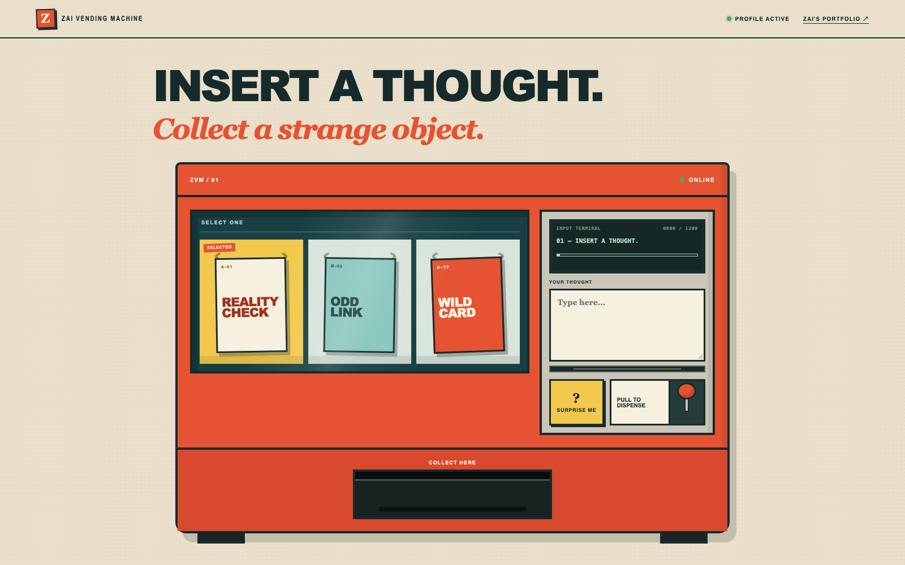

Insert a thought, pick a product, pull the lever. The machine returns a new object shaped by how I reason, not by what I have written.
Built from my Personal Brain, minus the private notes: it runs only on a reviewed public profile.
A Mini-Me should carry how I judge, not what I have written.

A thought and a product choice
Validation, rate limit, injection and extraction checks
Language and mode routing, then one assembled prompt
DeepSeek-V4-Flash via SiliconFlow
Parse, length caps, content filter, trace check
Object with method and source chips
isProjectJudgmentQuery and a judgment mode: name one project first, no disclaimers, speak as the machine, not as Zai.6/6 → 0/6disclaimer-first openings, 3 English and 3 Chinese runs per version.
UnstableThe “weakest” pick changes from run to run.
If an AI learns how I think, should it always think like me?
minimi-neon.vercel.app · github.com/zayyyseuc/minimi
06